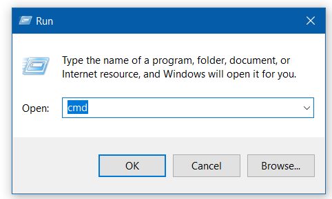
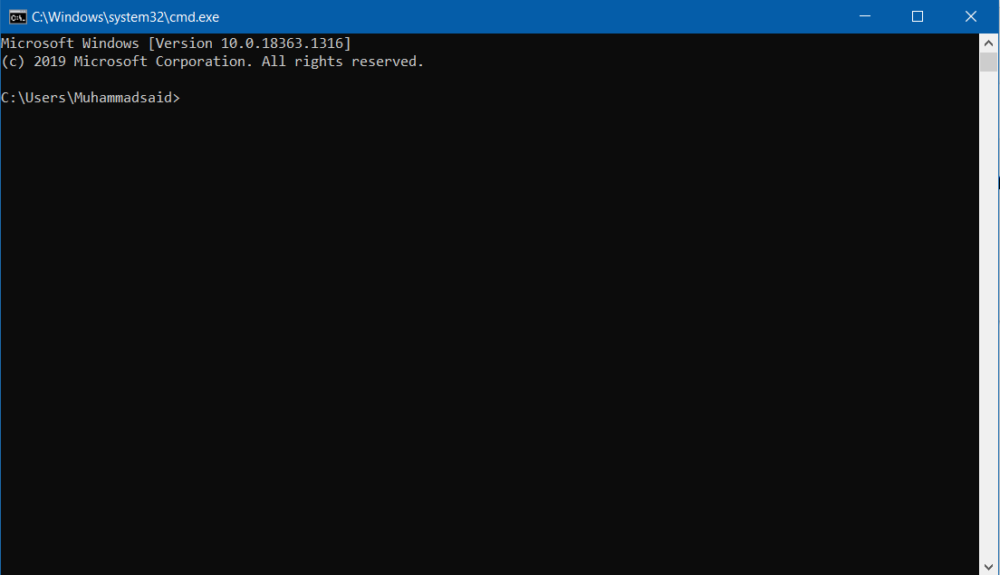

Python modullari
Bu bob quyidagilardan tashkil topgan:
Mavzular:
- 1. Tkinter
- 2. Turtle
- 3. NumPy
Tkinter
Ushbu bobda siz modullarni ishlatish va o’rnatish bo’yicha tushunchaga ega bo’lasiz.

Tkinter — bu Tk GUI asboblar to’plami bilan bog’langan Python. Bu Tk GUI asboblar to’plamining standart Python interfeysi va Pythonning amaldagi standart GUI-si. Tkinter Python standart Linux, Microsoft Windows va Mac OS X o’rnatmalariga kiritilgan.
Tkinter nomi Tk interfeysidan kelib chiqqan. Tkinter Fredrik Lundh tomonidan yozilgan.
Tkinter - bu Python litsenziyasi asosida chiqarilgan bepul dastur.
Ba’zi ta’riflar
Oyna
Ushbu atama har xil kontekstda turli xil ma’nolarga ega, ammo umuman olganda bu foydalanuvchi ekranidagi to’rtburchaklar maydonni anglatadi.
Yuqori darajadagi oyna
Asosiy oynaning bolasi vazifasini bajaradigan oyna. U ish stoli menejeri uchun standart ramka va boshqaruv elementlari bilan bezatilgan bo’ladi. Uni ish stoli atrofida ko’chirish mumkin va odatda uning o’lchamini o’zgartirish mumkin.
Vidjet
Grafik foydalanuvchi interfeysida dasturni tashkil etuvchi har qanday qurilish bloklari uchun umumiy atama.
- Asosiy vidjetlar: konteynerlar: ramka, labframe, toplevel, oynali oyna. Tugmalar: tugma, radio tugmasi, tasdiqlash tugmasi (tasdiqlash qutisi) va menyu tugmasi. Matn vidjetlari: yorliq, xabar, matn. Kirish vidjetlari: masshtab, aylantirish paneli, ro’yxat qutisi, slayder, spinbox, yozuv (bitta qator), variant menyusi, matn (ko’p qatorli) va kanvas (vektorli va pikselli grafikalar).
-
Tkinter ochiladigan dialog oynalarini ko’rsatishga imkon
beruvchi uchta modulni taqdim etadi:
tk.messagebox(tasdiqlash, ma’lumot, ogohlantirish va xatolar uchun dialog oynalari),tk.filedialog(bitta fayl, bir nechta fayl va kataloglarni tanlash dialoglari) vatk.colorchooser(rang tanlash) .
Bola va ota-ona
Har qanday vidjet yaratilganda, ota-ona va bola munosabatlari o’rnatiladi. Masalan, ramkaning ichiga matn yorlig’ini joylashtirsangiz, ramka yorliqning ota-onasi hisoblanadi.
Oddiy dastur
Bitta vidjetli oddiy Python 3 Tkinter dasturi:
#!/usr/bin/env python3
from tkinter import *
root = Tk() # root (tayanch) oynasini yarating
w = Label(root, text="Hello, world!") # So'zlar bilan yorliq yarating
w.pack() # Yorliqni oynaga qo'ying
root.mainloop() # Hodisalar tsiklini boshlang
Tkinter Pythonni o’rnatganingizda o’zi standard paketni ichida o’rnatilgan bo’ladi. Bu standard paketdir.
Turtle
Kompyuter grafikalarida toshbaqa grafigi dekart tekisligida nisbiy kursordan (“toshbaqa”) foydalanilgan vektorli grafikalardir.
Toshbaqaning uchta xususiyati bor: joy, oriyentatsiyasi (yoki yo’nalish) va ruckhasi. Ruchka ham atributlarga ega: rang, kenglik va yozilayotgan/yozilmayotgan holati.
Toshbaqa “10 bo’sh joy oldinga siljish” va “chapga 90 daraja burilish” kabi o’z pozitsiyasiga nisbatan buyruqlar bilan harakat qiladi. Toshbaqa olib yuradigan ruchka uni yozish, rangini sozlash yoki kengligini sozlash orqali ham boshqarilishi mumkin. Agar talaba toshbaqa bo’lsa, nima qilishlarini tasavvur qilish orqali toshbaqa harakatini tushunishi (va bashorat qilishi va haqida o’ylashi) mumkin edi. Seymur Papert buni “tana sintonik” mulohaza deb atadi.
To’liq toshbaqa grafika tizimi boshqaruv oqimi, protseduralari va rekursiyani talab qiladi. Ushbu qurilish bloklaridan kvadratchalar, uchburchaklar, doiralar va boshqa kompozitsion figuralar kabi murakkabroq shakllarni qurish mumkin. Toshbaqa grafikasi g’oyasi, masalan, fraktallarni ishlab chiqarish uchun Lindenmayer tizimida foydalidir.
Toshbaqa geometriyasi ba’zida grafik muhitda qat’iy koordinatali manzilli grafik tizimiga alternativ sifatida ishlatiladi.
x-y tekisligida (0, 0) dan boshlanadigan robot toshbaqani
tasavvur qiling. import turtle dan so’ng, unga
turtle.forward(15) buyrug’ini bering va u
harakatlanayotganda chiziq chizib, o’zi qaragan yo’nalishda 15
piksel harakat qiladi (ekranda!).
turtle.right(25) buyrug’ini bering va u o’z joyida
soat yo’nalishi bo’yicha 25 daraja aylanadi.
Ushbu va shunga o’xshash buyruqlarni birlashtirib, murakkab shakllar va rasmlarni osongina chizish mumkin.
turtle moduli bir xil nomdagi modulni Python
standart tarqatishidan Python 2.5 versiyasigacha kengaytirilgan
modulidir.
turtle moduli toshbaqa grafikasi uchun ibtidoiy
narsalarni ob’ektiv va protsedurali yo’nalishlarda taqdim etadi.
Tkinterni asosiy grafikalar uchun ishlatganligi sababli, unga Tk
ko’magi bilan o’rnatilgan Python versiyasi kerak.
turtle yulduzi - Oddiy dastur
Toshbaqa oddiy harakatlarni takrorlaydigan dasturlar yordamida murakkab shakllarni chizishi mumkin.

from turtle import *
color('red', 'yellow')
begin_fill()
while True:
forward(200)
left(170)
if abs(pos()) < 1:
break
end_fill()
done()
turtle moduli Pythonning standard paketi ichida
o’rnatiladi. Dasturda ishlatish uchun
from turtle import * ni yozing.
NumPy

NumPy - Pythonda ilmiy hisoblash uchun asosiy paket. Bu Python kutubxonasi, ko’p o’lchovli qator ob’ekti, turli xil yetishib olingan narsalar (masalan, maskalangan massivlar va matritsalar) va matematik, mantiqiy, shakl manipulyatsiyasi, saralash, tanlash, kiritish-chiqarishni o’z ichiga olgan massivlarda tezkor operatsiyalarni bajarish tartiblari assortimenti, alohida Furye transformatsiyasi, asosiy chiziqli algebra, asosiy statistik operatsiyalar, tasodifiy simulyatsiya va boshqalarni o’z ichiga olgan moduldir.
PIP
Agar siz pipdan foydalansangiz, NumPy-ni quyidagilar bilan o’rnatishingiz mumkin:
pip install numpy
Windowsda Win + R tugmalarini bosing. Paydo bo’lgan
oynada cmd deb tering. Yangi paydo bo’lgan oyna bu
qatorli buyruq interpretatoridir, ya’ni, shu yerdan Windows
operatsion tizimini boshqarsangiz bo’ladi.


Endi paydo shu yerga pip deb tering. Buyruqlar
ro’yxati paydo bo’lishi kerak. Bu degani sizda
pip ishlamoqda - Pythonning 3.4 versiyasidan
tortib, pip paket menejeri standard paketning
ichida o’rnatiladi.
NumPy massivlari va standart Py`thon ketma-ketliklari orasida bir nechta muhim farqlar mavjud:
-
Python ro’yxatlaridan farqli o’laroq NumPy massivlari yaratilish vaqtida aniq o’lchamga ega (ular dinamik ravishda o’sishi mumkin). ndarray hajmini o’zgartirish yangi qator yaratadi va asl nusxasini o’chirib tashlaydi.
-
NumPy massividagi elementlarning barchasi bir xil ma’lumot turiga ega bo’lishi kerak va shu bilan xotirada bir xil hajmda bo’ladi. Istisno: (Python, shu jumladan NumPy) moslamalari massivlari bo’lishi mumkin va shu bilan turli o’lchamdagi elementlarning massivlari mavjud.
-
NumPy massivlari ko’p sonli ma’lumotlarga nisbatan rivojlangan matematik va boshqa turdagi operatsiyalarni osonlashtiradi. Odatda, bunday operatsiyalar Python-ning o’rnatilgan ketma-ketliklari yordamida imkon qadar kamroq va kamroq kod bilan bajariladi.
-
Python asosidagi ilmiy va matematik to’plamlarning tobora ko’payib borishi NumPy massivlaridan foydalanmoqda; garchi ular odatda Python ketma-ketligini kiritishni qo’llab-quvvatlasa ham, ular bunday kirishni NumPy qatorlariga qayta ishlashdan oldin o’zgartiradilar va ular ko’pincha NumPy massivlarini chiqaradilar. Boshqacha qilib aytganda, bugungi Pythonga asoslangan ilmiy / matematik dasturlarning ko’pchiligidan (ehtimol hatto ko’pchiligidan) samarali foydalanish uchun, Python-ning o’rnatilgan ketma-ketlik turlaridan qanday foydalanishni bilish yetarli emas - shuningdek NumPy massivlaridan qanday foydalanishni bilish kerak.
Asosiy Tushuncha
NumPy-ning asosiy ob’ekti bir hil ko’p o’lchovli massivdir. Bu elementlarning jadvali (odatda raqamlar), barchasi bir xil, manfiy bo’lmagan tamsayılar to’plami bilan indekslangan. NumPy o’lchamlari o’qlar deb ataladi.
Masalan, 3D fazodagi nuqta koordinatalari
[1, 2, 1] bitta o’qga ega. Ushbu o’qda 3 ta element
bor, shuning uchun uning uzunligi 3 ga teng deymiz. Quyidagi
rasmda massivda 2 ta o’q mavjud. Birinchi o’qning uzunligi 2,
ikkinchi o’qining uzunligi 3 ga teng.
[[ 1., 0., 0.],
[ 0., 1., 2.]]
NumPy ning massiv klassi ndarray deb nomlanadi.
numpy.array standart Python kutubxonasi klassi
array.array bilan bir xil emasligini unutmang, u
faqat bitta o’lchovli massivlarni boshqaradi va kam
funksiyalarni taklif qiladi. ndarray ob’ektining
muhim xususiyatlari:
ndarray.ndim
massivning o’qlari (o’lchamlari) soni.
ndarray.shape
massivning o’lchamlari. Bu har bir o’lchovdagi massivning
hajmini ko’rsatadigan tamsayılar to’plami. N qator va m ustunli
matritsa uchun shakli (n, m) bo’ladi. Shuning uchun shakl
gorizontalining uzunligi o’qlar soni, ndim.
ndarray.size
massiv elementlarining umumiy soni. Bu shakl elementlari
mahsulotiga teng.
ndarray.dtype
massivdagi elementlarning turini tavsiflovchi ob’ekt. Oddiy
Python turlaridan foydalanib dtype yaratishi yoki ko’rsatishi
mumkin. Bundan tashqari, NumPy o’z turlarini taqdim etadi.
numpy.int32, numpy.int16 va numpy.float64 ba’zi misollar.
ndarray.itemsize
massivning har bir elementining baytdagi hajmi. Masalan, float64
tipidagi elementlar massivi 8 (= 64/8) hajmiga ega, kompleks32
turlaridan biri 4 (= 32/8) hajmga ega. Bu ndarray.dtype.itemsize
ga teng.
ndarray.data
massivning haqiqiy elementlarini o’z ichiga olgan bufer. Odatda,
biz ushbu atributdan foydalanishga hojat qolmaydi, chunki biz
indekslash vositalaridan foydalangan holda massivdagi
elementlarga kirishimiz mumkin.
Misol
>>> import numpy as np
>>> a = np.arange(15).reshape(3, 5)
>>> a
array([[ 0, 1, 2, 3, 4],
[ 5, 6, 7, 8, 9],
[10, 11, 12, 13, 14]])
>>> a.shape
(3, 5)
>>> a.ndim
2
>>> a.dtype.name
'int64'
>>> a.itemsize
8
>>> a.size
15
>>> type(a)
<class 'numpy.ndarray'>
>>> b = np.array([6, 7, 8])
>>> b
array([6, 7, 8])
>>> type(b)
<class 'numpy.ndarray'>